Sample Dimensions
Visual Spatial
Tests the ability to perceive and understand spatial relationships between objects. Evaluates orientation discrimination and positional awareness.
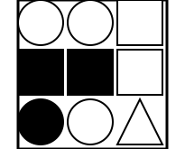
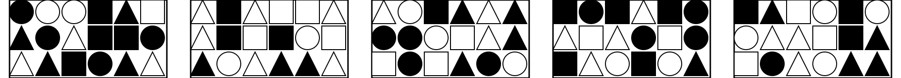
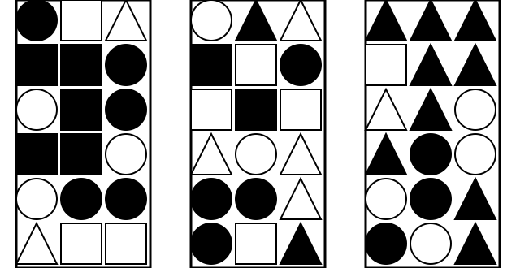
Sample Question: Starting from the black circle at position (row 1, column 3), how many triangles are there bottom of it in the same row?
Visual Figure-Ground
Examines the ability to distinguish an object from its background. Challenges perception by varying contrast, noise, and complexity.
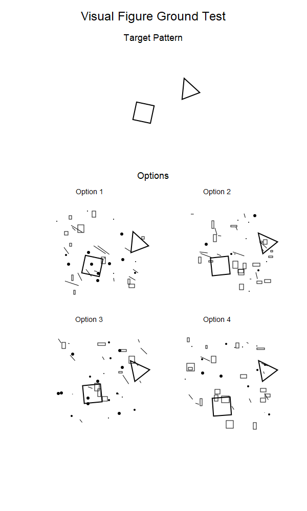
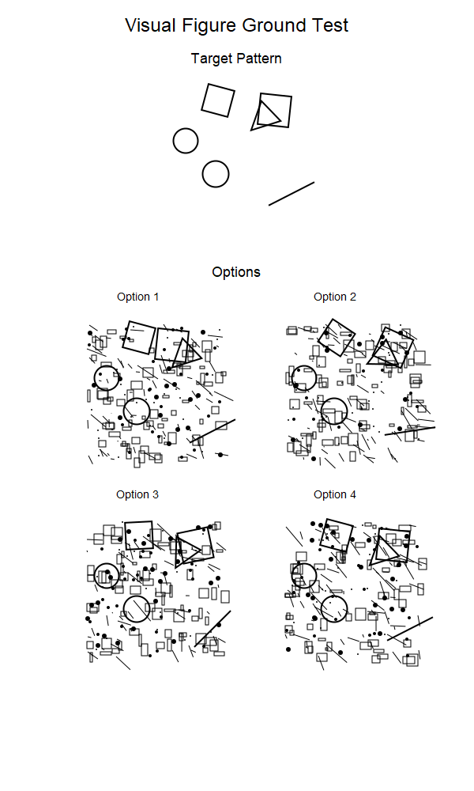
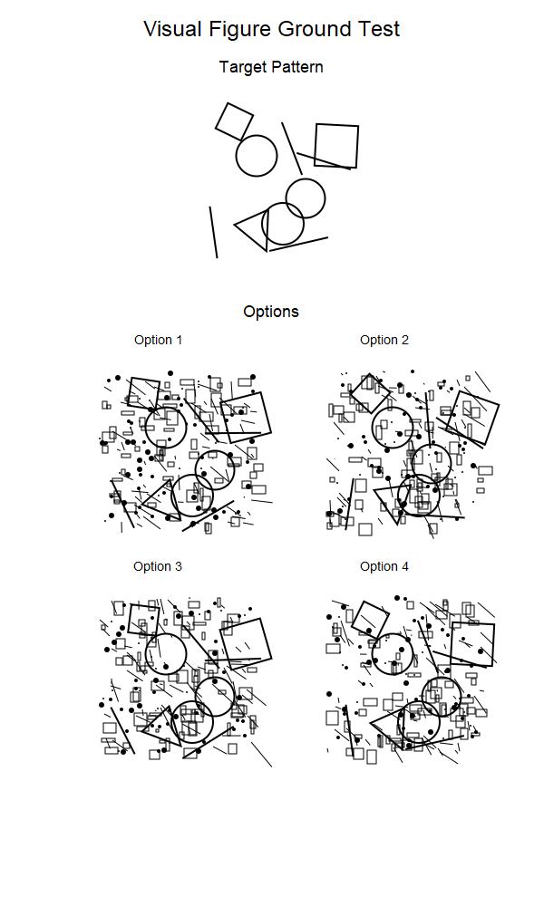
Sample Question: The figure consists of a Target image, which is embedded in some background noise. Out of the four given options, your task is to pick the option which has the same figure as the target image. Respond as follows: Option <your answer (choose between 1, 2, 3, or 4)>.
Visual Form Constancy
Assesses recognition of shapes despite changes in size, orientation, or context. Tests invariance in visual perception.
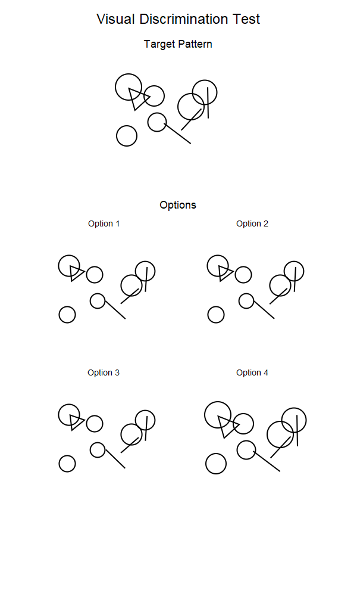
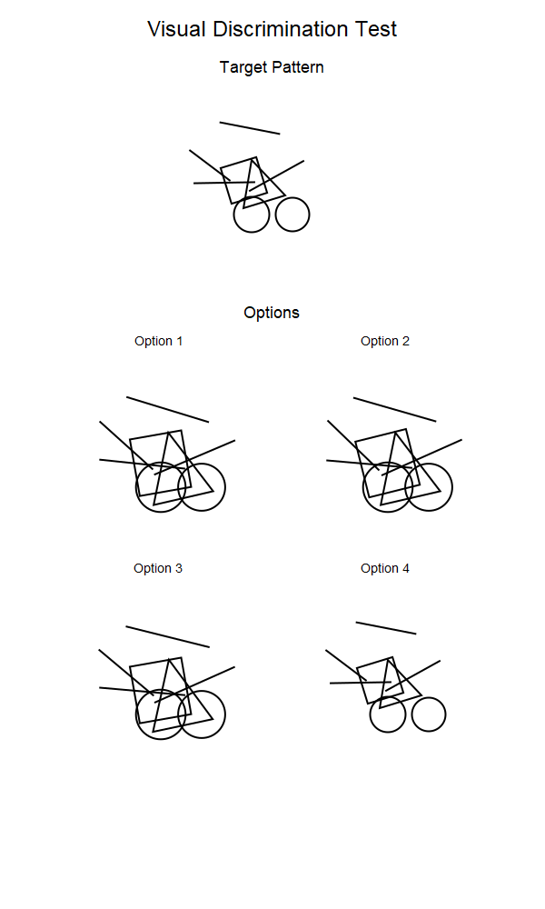
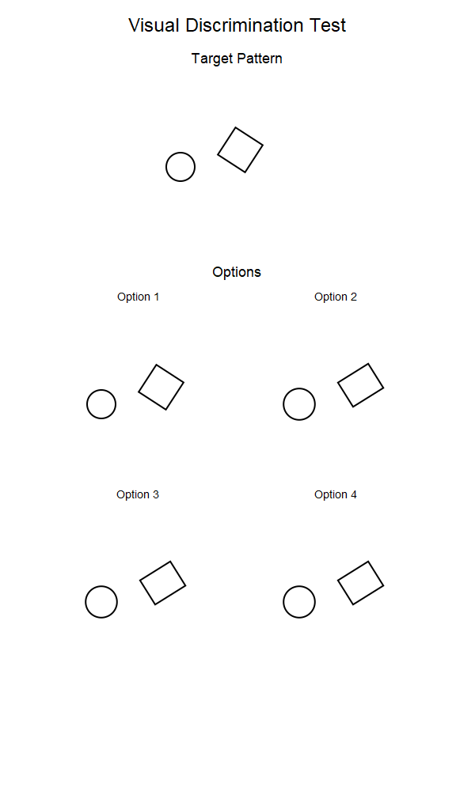
Sample Question: The figure consists of a Target image. Out of the four given options, your task is to pick the option which has the same figure as the target image. Respond as follows: Option <your answer (choose between 1, 2, 3, or 4)>.
Shape Disambiguation
Challenges the ability to identify ambiguous shapes that can be interpreted in multiple ways. Explores perceptual flexibility.
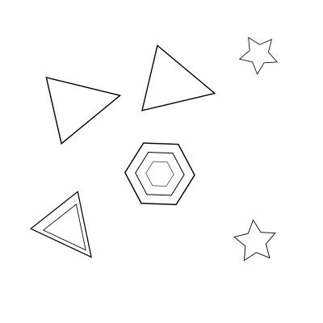
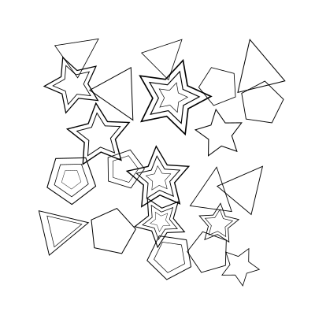

Sample Question: Count the total number of triangles in the image, including each concentric triangle separately. For example, if there is one triangle with 2 inner concentric rings, that counts as 3 triangles. Respond with only a number.
Letter Disambiguation
Tests the recognition of letters.
Sample Question: The image shows one or more letters formed by a grid of small squares. What letter(s) can you identify in this image? Please respond with only the letter(s) you see.
Joint Shape-Color Discrimination
Evaluates the ability to jointly recognize shapes and color.
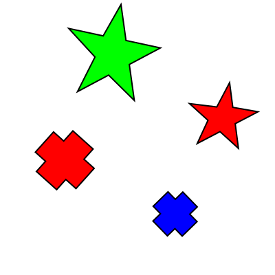
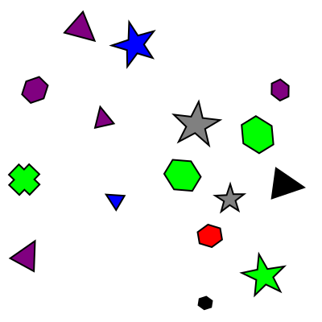

Sample Question: Count the number of star's that are red.
Visual Closure
Assesses the ability to complete partially obscured shapes by mentally filling in missing information.
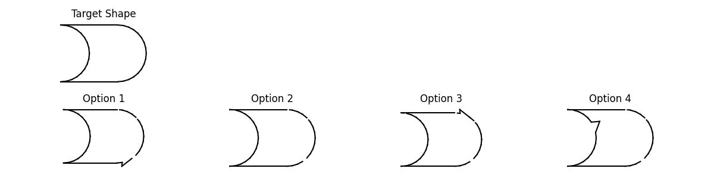
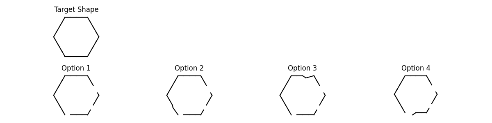
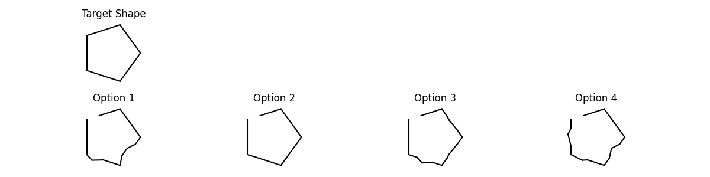
Sample Question: The figure consists of a target image which is complete, Out of the four given options (which are partially complete), your task is to pick the option which when completed matches the target image. Respond as follows: Option .